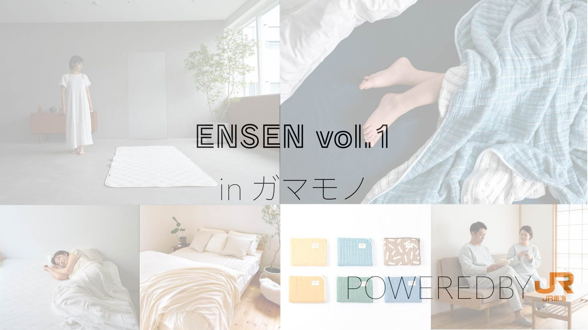
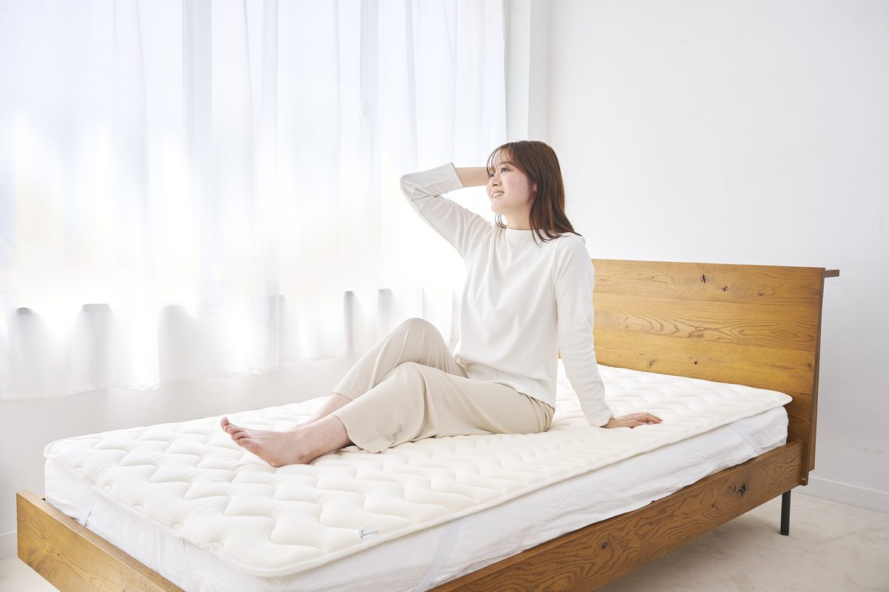
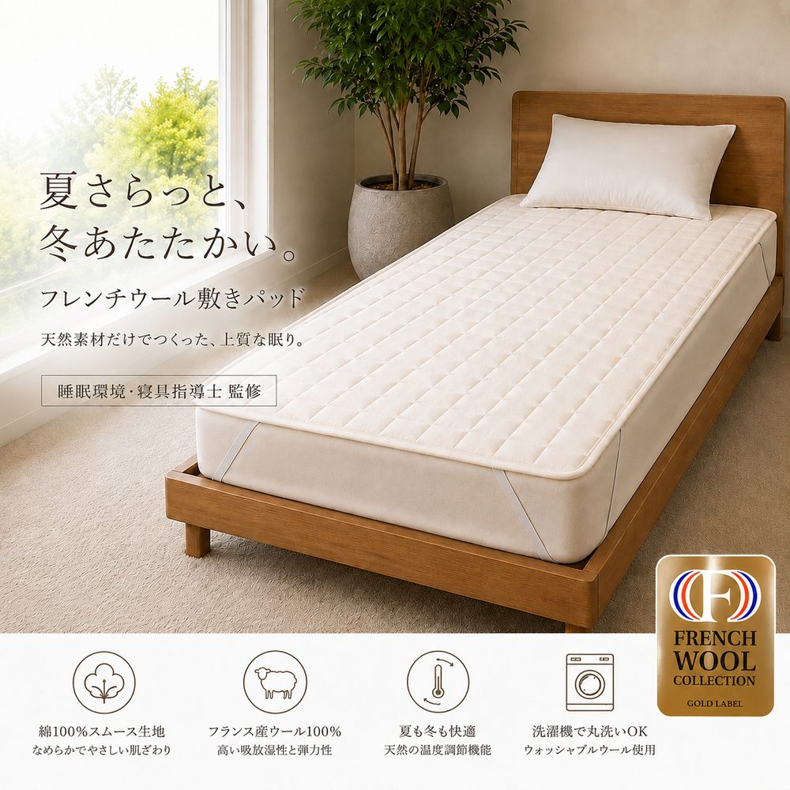
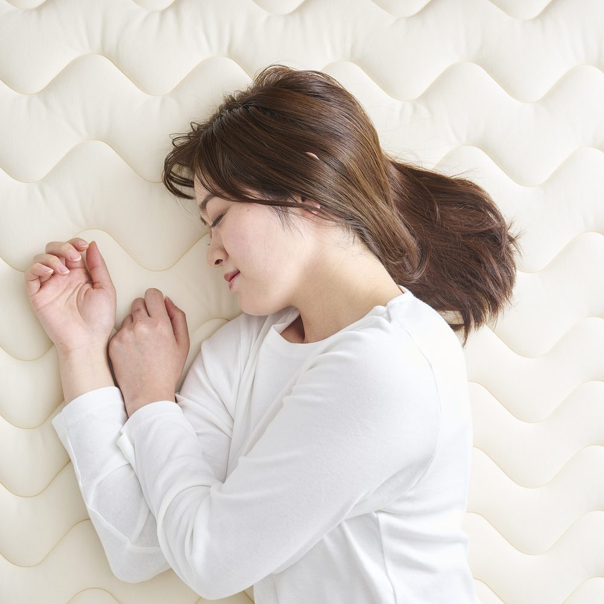
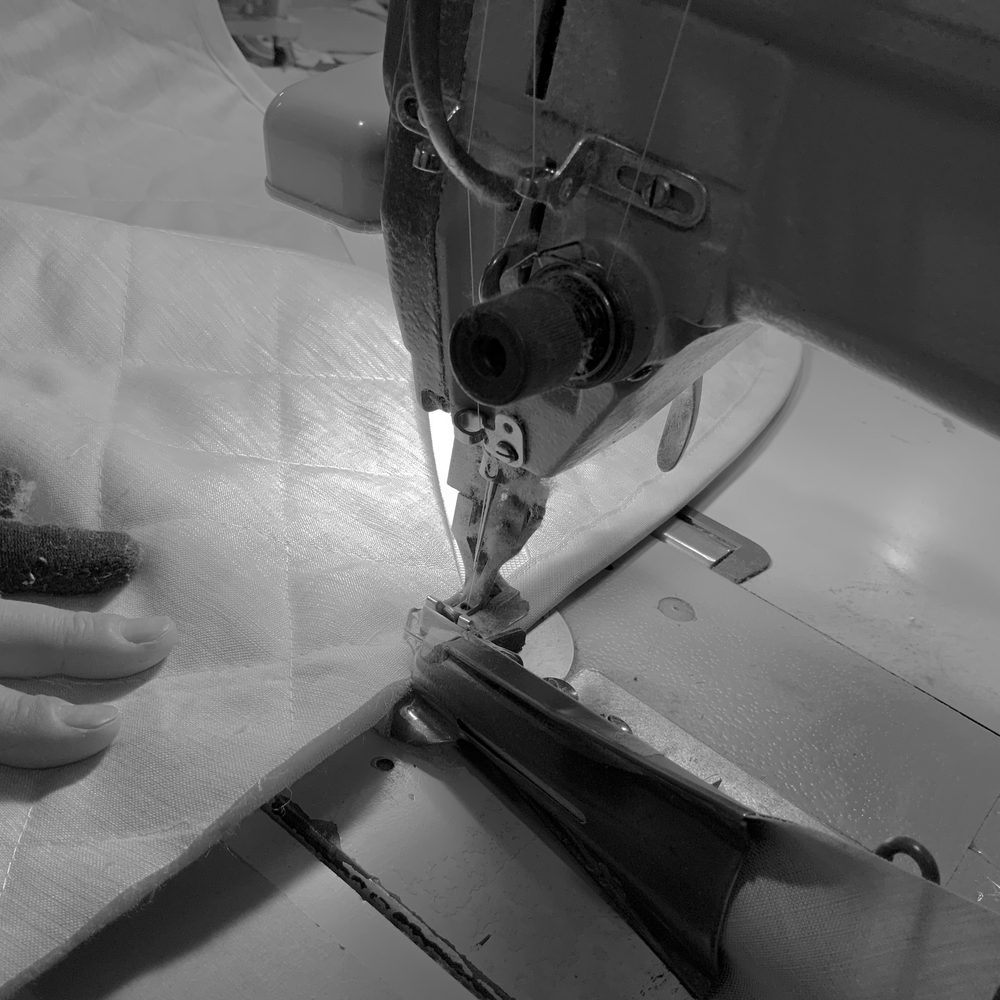
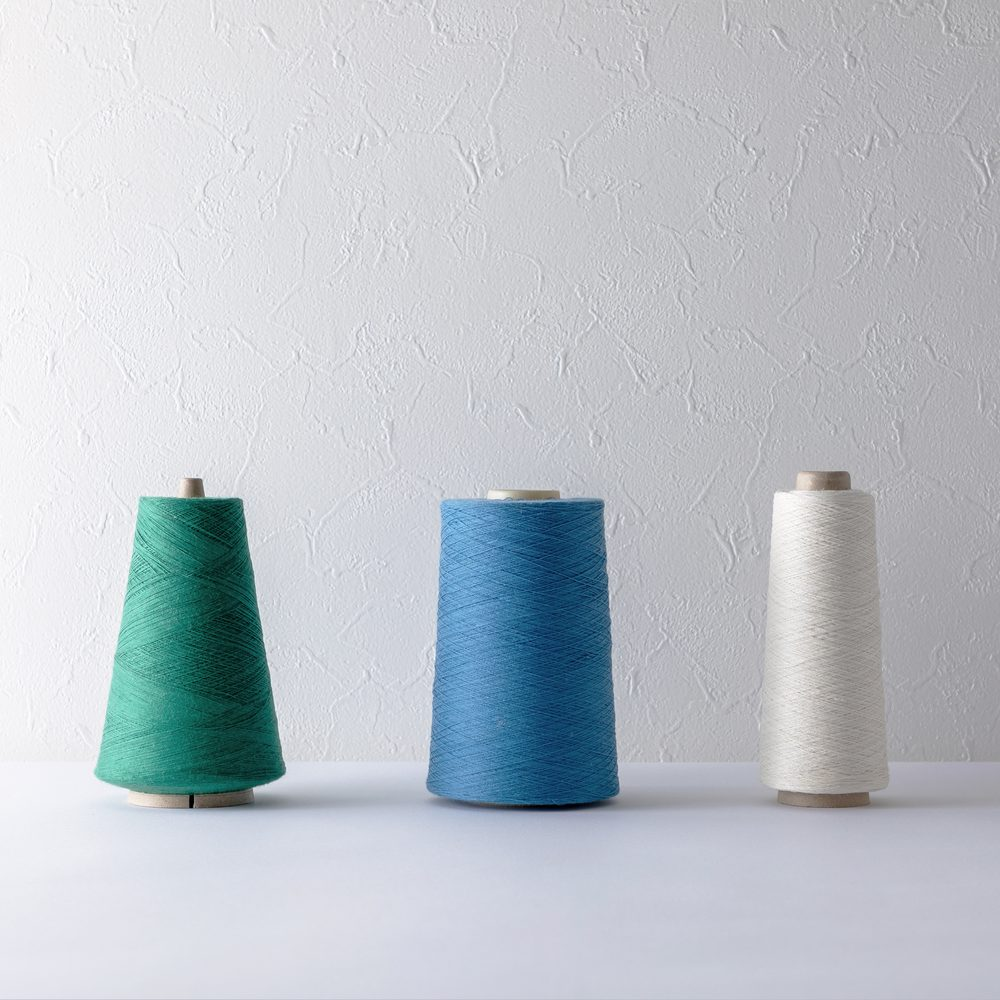

触れる
Touch
会場に並ぶ商品は、どれも実際に手に取って確かめられます。素材の質感や、寝具の使い心地を、その場で体験してください。
体験型産地マーケット
線路でつながる、町と町、人と人の縁。
入場無料・予約不要

「縁線(えんせん)」は、「沿線」と「縁」をかけた名前です。
線路でつながる町と町、そして人と人の縁。 駅という日々の通り道で、ふと足を止めて手に取ってもらえるものを、沿線のつくり手が持ち寄ります。
「縁線」という名前には、人と人、地域と地域、作り手と使い手のご縁をつなぎたいという思いを込めています。蒲郡の繊維産業にとどまらず、地域全体の活性化を目指す取り組みです。
主催の伴装有限会社は、愛知県蒲郡市で約50年続く寝具工場です。蒲郡の繊維産業をはじめとする地域のものづくりを盛り上げ、蒲郡市全体の活性化に貢献したい。人口減少など地域が抱える課題を見据え、企業や住民がつながる「地域のハブ」を育てることが、この取り組みの出発点です。蒲郡未来創造塾で考えてきた地域の未来や企業の役割についての学びも、今回の挑戦につながっています。
初回は伴装1社でスタートし、今後は蒲郡のものづくり企業や地域の関係者との連携を広げていく考えです。将来的には年4回程度の開催を構想しています。
新しい販売の形を試す、体験型のマーケットです。冬物・通年用の敷きパッド、ベッドパッド、ガーゼケット、綿毛布などを紹介・販売します。実際に商品に触れ、素材の質感や使い心地を確かめていただけます。
会場に並ぶ商品は、どれも実際に手に取って確かめられます。素材の質感や、寝具の使い心地を、その場で体験してください。
在庫のある商品は、その場で購入できます。作り手の話を聞きながら、暮らしに合う一品を選べます。
冬物の敷きパッドなど一部商品については、開催期間中に予約を受け付け、受注後に製造する販売方式を試みます。メーカーだからこそできる、作り手と使い手の距離を縮める取り組みです。

寝具工場(愛知県蒲郡市・約50年)
愛知県蒲郡市で寝具製造を手がける、約50年続く寝具工場です。蒲郡の繊維産業をはじめとする地域のものづくりを盛り上げ、企業や住民がつながる「地域のハブ」を育てることを目指しています。今回は、自社商品を入口に「触れて選べる販売と予約受注」に挑戦します。




※ 写真は一例です。会場での品揃えは変更になる場合があります。
| イベント名 | 縁線 ENSEN体験型産地マーケット(テスト開催) |
|---|---|
| 日程 | 2026年11月19日(木)・20日(金)・21日(土) 3日間 |
| 時間 | 11月19日(木)・20日(金) 16:00 – 20:0011月21日(土) 10:00 – 15:00 |
| 会場 | 蒲郡駅 コンコース 改札外、NAVI TERRACE前空間 |
| アクセス |
|
| 出店 |
|
| 価格帯・ お支払い |
3,000円〜15,000円お支払い:現金・キャッシュレス決済 |
| 販売 | 一部即売 / 一部予約受注冬物の敷きパッドなど一部商品は、期間中に予約を受け付け、受注後に製造します |
| 主催 | 伴装有限会社 |